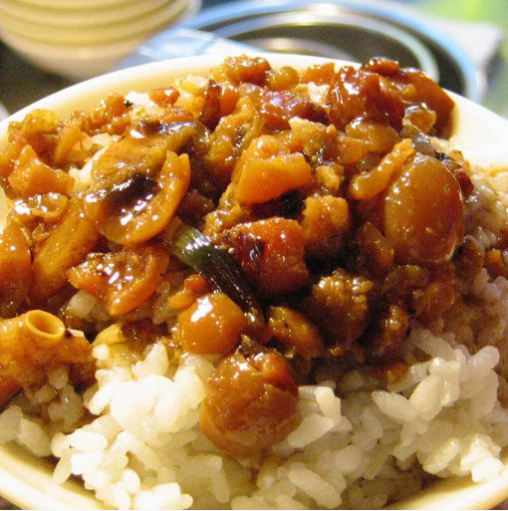
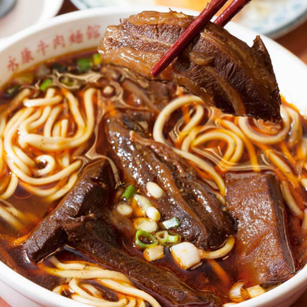
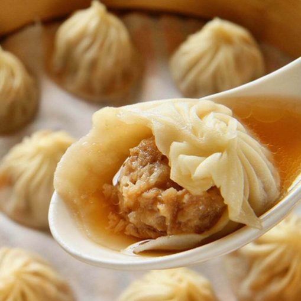

網頁設計
期末作業
台灣有名小吃

滷肉飯
看似普通的滷肉飯，一碗好吃的滷肉飯軟腴化口不油膩，小從小吃攤，大到五星級酒店，也曾登上總統府國宴，「臺灣小吃教主」的美食作家舒國治也曾說，滷肉飯是臺灣的「國飯」。滷肉飯一般指臺灣北部、中部的滷肉飯，肉用刀切碎後滷的，而這在南部稱之肉燥（臊）飯，肉是用機器絞碎滷的。南部也有滷肉飯，則指用大塊三層肉（五花肉）滷的，這在北部、中部稱之爌（焢）肉飯。
詳細內容

牛肉麵
牛肉麵是臺灣的國民美食之一，牛肉麵要好吃，麵條、湯頭及牛肉三大元素缺一不可，湯頭更是牛肉麵的精華，牛肉麵大多分為紅燒、清燉，搭配上燉好的牛腩及牛筋居多。從小攤到老店，各門派莫不潛心專研牛肉麵學，牛肉麵已成臺灣之光，各店家花盡心思追求牛肉麵極致美味！
詳細內容

小籠包
誕生於江南地區的著名點心，以「體小、餡大、汁多、味鮮、皮薄、形美」著稱。傳統肉餡小籠湯包來說，湯汁是靈魂，為了追求皮薄透亮的口感，許多師傅採用塗抹麵粉後用擀麵杖壓出薄如紙的麵皮，蒸出的小籠包就會顯得粉潤透亮！傳統小籠包的褶皺在14個以上，而更為考究如知名店家鼎泰豐會做成18個以上。
詳細內容